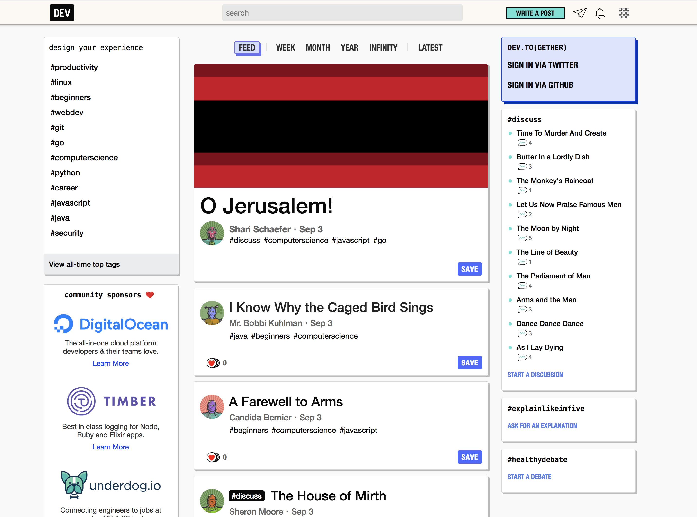

dev.to をローカルで動かす
Sep 3, 2018
2018/08/08 に dev.to が OSS 化された．
とりあえずローカルで動かすまでにやったことのメモ．
Getting Started
Getting Started が充実している．ほぼその通りに進めれば問題ない．Ruby は最新版が必要，DB は PostgreSQL．長年 Rails 触っているが地味に PostgreSQL 使ったことがなかった．
1 | $ ruby -v |
1 | $ gem install bundler |
foreman は複数プロセスをまとめて管理できるツール．
ローカル実行時は
- Rails サーバ (puma)
- Webpacker (webpackのラッパー，webpack の実行と hot-reload が走る)
- Job (DelayedJob)
が実行される．
1 | # Procfile.dev |
Environment Variables
figaro を使って YAML ファイルで環境変数を管理している．
1 | $ cp config/sample_application.yml config/application.yml |
Algolia
サイト内コンテンツの検索で使われている．ローカル実行前に必ず設定が必要になる．
DEV Docs > Getting API Keys for Dev Environment > Algolia に沿って，会員登録＋ Credentials を発行する．
GitHub or Twitter
ログインを試すのに必要．ログインせずに試すのであればなくてもOK．こちらも丁寧にドキュメントに手順が記載されている．
発行したキーを application.yml に設定する．
Set up
1 | $ bundle install |
setup 内で User や Article などのダミーデータが生成され，ほぼ本番環境と同じ表示が再現できる．
Start
1 | $ bin/startup |

おまけ
オフラインになると，お絵かきができるらしいw
ローカルでサーバ立ち上げて，一度ブラウザで表示した後，サーバ閉じると表示された．
You can draw a picture when https://t.co/eViI03eKVa is being offline 😇🎨🖌 pic.twitter.com/F2xEM4Yruv
— tanakaworld 🧢 (@_tanakaworld) September 3, 2018